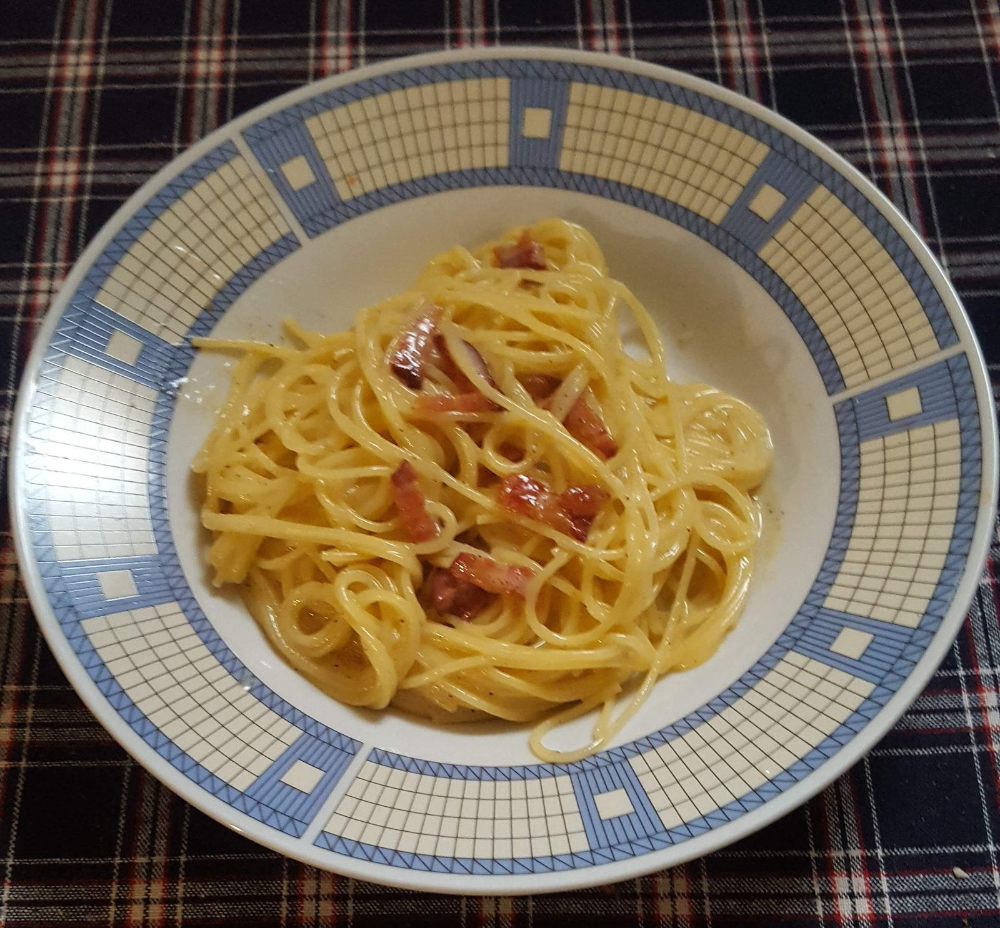

Spaghetti alla carbonara
A Roman classic: spaghetti in a creamy sauce of egg yolks, pecorino and rendered guanciale fat. No cream — pasta water helps bring the sauce together.
Ingredients · 2 servings
Quantities from the GialloZafferano video. Tick off ingredients as you prepare them.
Start cooking
- Cut the guanciale into strips and grate the pecorino. Bring water to the boil; salt lightly, as the pork and cheese are salty.
- Cook the guanciale in a dry pan over medium heat until golden and the fat has rendered. Lift out the pieces, leaving the fat in the pan.
- Cook the spaghetti al dente according to the packet. Reserve a cup of cooking water before draining.
- Mix the yolks, pecorino and freshly ground pepper in a bowl.
- Toss the pasta in the rendered fat. Remove the pan from the heat, let it cool briefly, then stir in the yolk mixture. Add reserved water a spoonful at a time until creamy.
- Return the guanciale, toss and serve immediately. Do not boil the sauce after adding the yolks, or the eggs will scramble.
Regional note: the traditional Roman version uses no onion or garlic. Northern variants sometimes include pancetta but in Rome that's considered a swap.
📖 GialloZafferano · verify recipe ▶ Video recipe · GialloZafferanoCook and practise listening to Italian: listen for tuorli (yolks), mescolare (to stir) and a fuoco spento (with the heat off).